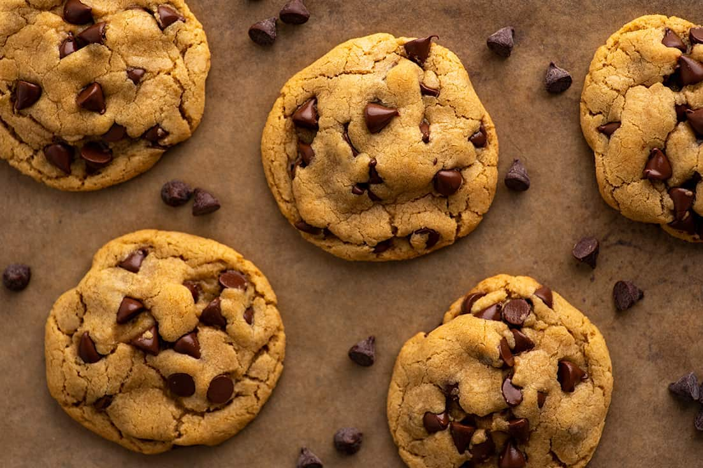

Chocolate Chip Cookies

The best small-batch chocolate chip cookies.
This easy recipe makes six perfect cookies in just 20 minutes.
Ingredients:
- 56g butter, melted and cooled slightly
- 20g sugar
- 60g brown sugar
- 1/4 tsp baking soda
- A pinch of salt
- 1 egg yolk
- 1 tsp vanilla
- 80g all-purpose flour
- 80g semi-sweet chocolate chips
Instructions:
- Preheat your oven to 180°, and line a baking sheet with parchment paper
- In a bowl, mix together the flour, baking soda and salt.
- In a separate bowl, whisk together the butter and sugars.
- Add in the egg yolk and vanilla and whisk until well-combined.
- Add the flour mixture and chocolate chips and mix until just combined.
- Divide the dough into six portions, rolled into balls.
- Bake for 9 to 12 minutes, until the cookies look just set. Cool on the cookie sheet and enjoy!